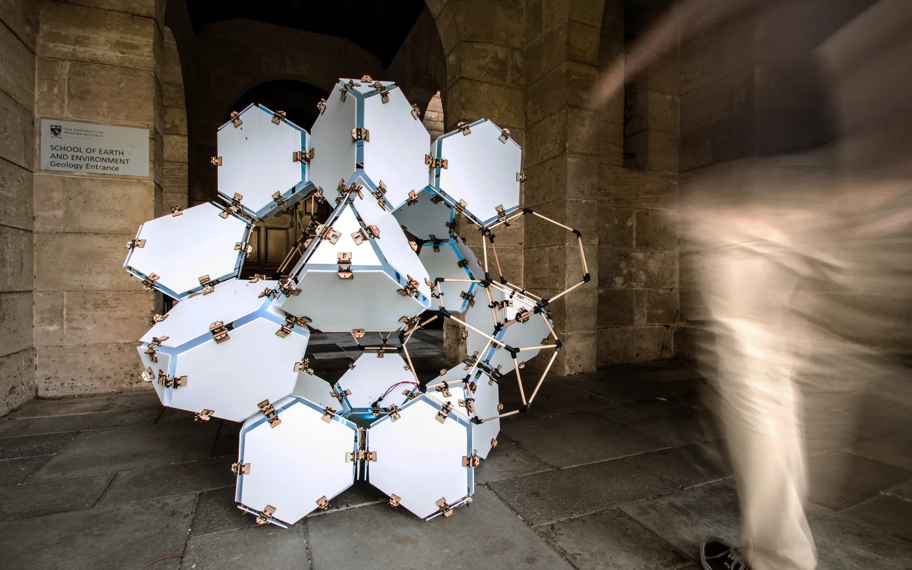
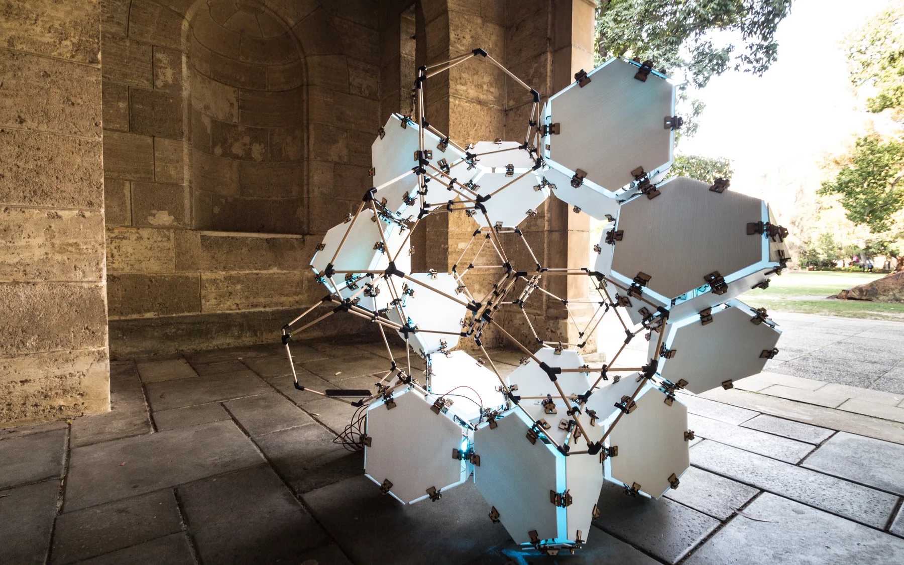
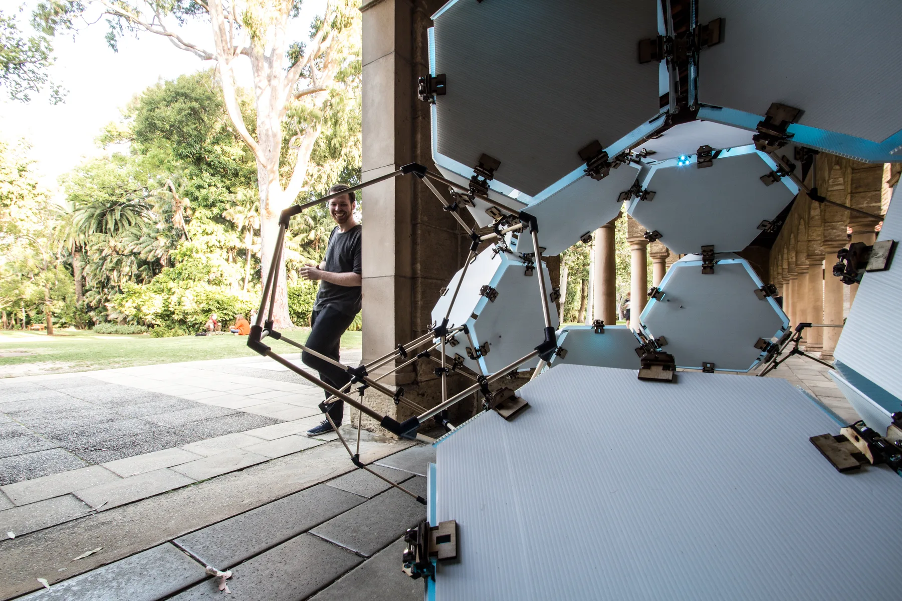
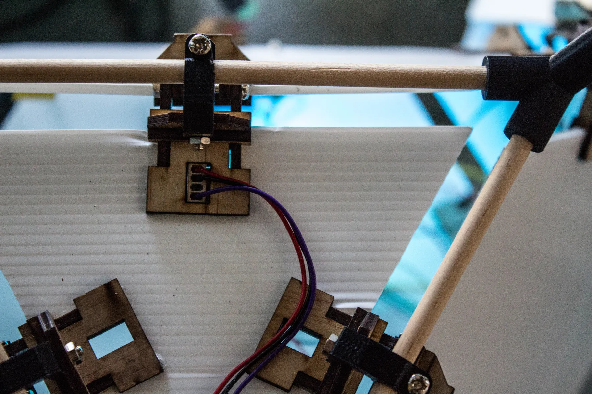
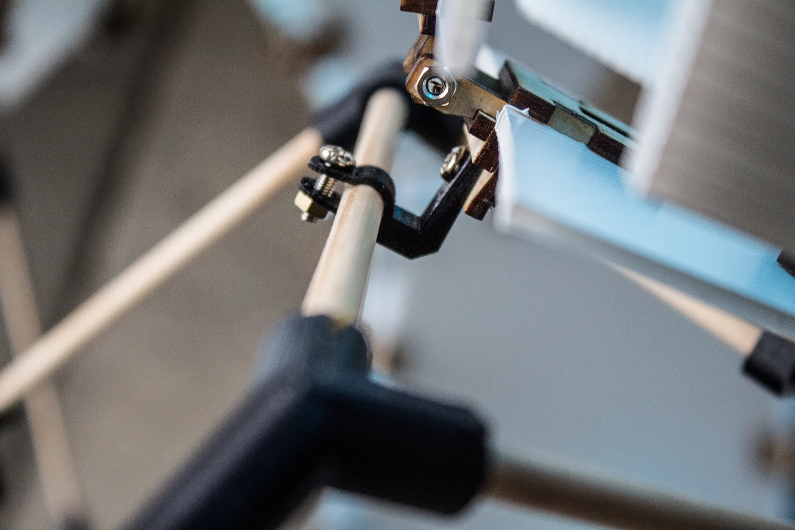
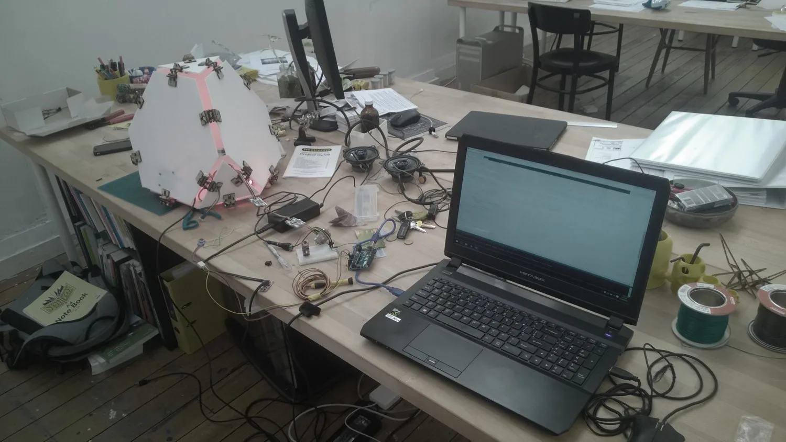

Ambient Sphere Temporary Interactive Installation
Commissioned by SymbioticA (UWA) + Curtin University
This prototype installation was designed for the UWA CRINGE Festival and subsequently exhibited at the Curtin Creativity Festival. It explores the potential of interactive architectural components and the digital fabrication of aggregative geometries. Its form is derived from a component-based dodecahedral system capable of expanding in multiple directions. A combination of hollow dowel modules and ‘solid’ Flute Core modules expresses this open-ended compositional potential.
A motion sensor installed at the base of the sculpture was connected to a microcontroller, lighting system and speaker. In response to the speed and direction of a participant’s movement, the sculpture generated pulsating patterns of light and sound. The incoming sensor data was mapped to sine-wave patterns, producing a dynamic relationship between the installation and its audience.
- Design: Robert Cameron, Andrei Smolik
- Year completed: 2015
- Location: UWA, Perth + Curtin University, Perth
- Client: SymbioticA (UWA) + Curtin University
- Architect: T&Z Architects
- Fabricator: Kilmore Group
- Contractor: PS Structures
- Budget: $600
- Size: 1.5m x 1.5m x 1.5m




